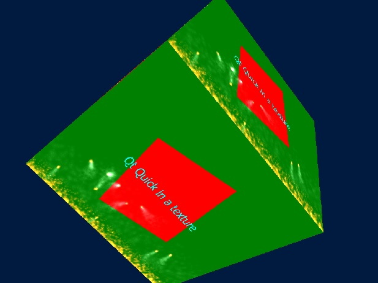

QQuickRenderControl OpenGL Example
Shows how to render a Qt Quick scene into a texture that is then used by a non-Quick based OpenGL renderer.

The Qt Quick scene is managed by a QQuickWindow that is not visible on-screen. Rather, rendering targets an OpenGL texture and is controlled through QQuickRenderControl.
The cube is rendered directly with OpenGL, using Qt Gui enablers such as QWindow, QOpenGLContext, QOpenGLShaderProgram, and QOpenGLFunctions. The cube is textured with the texture that the Qt Quick render pass outputs to.
In addition, basic input event forwarding is also demonstrated. When holding down the left mouse button, the background Rectangle color is altered via QML bindings. Similarly, holding down a key on the keyboard changes the color as well. This proves that the "fake" events sent from the application (generated based on events from the on-screen QWindow) are forwarded and processed within the Qt Quick scene.